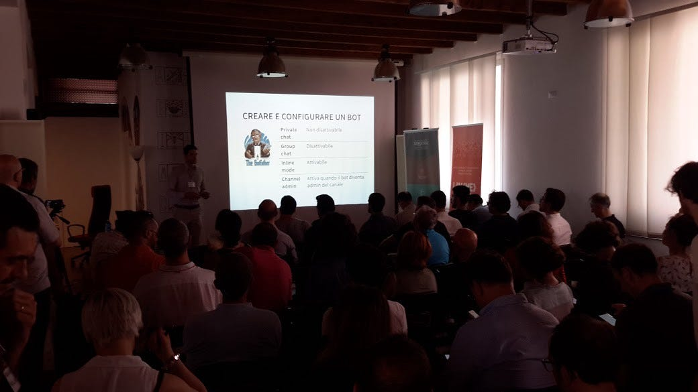

ConvComp2016: intelligenza collettiva e Bot

Come visto nel precedente articolo, le app di instant messaging offrono una nuova piattaforma per l’offerta di servizi che ha dalla sua — come lo era stato per la nascita della piattaforma del web — la presenza di un vastissimo numero di utenti già attivi, già abituati all’esperienza d’uso della piattaforma e che sfruttano già i servizi della piattaforma con profitto.
L’interesse per i Bot e le interfacce conversazionali sfruttati all’interno delle applicazioni di messaggistica testimoniano in qualche modo la naturale tendenza a non re-inventare la ruota: in presenza di un sistema esistente e con un grande valore dato dalla presenza di utenti e servizi — come può esserlo una piattaforma di messaggistica — vale sempre la pena sfruttarla per costruirci qualcosa sopra.
L’interesse per i Bot è testimone della convergenza su interfacce di livello sempre più alto.
L’intelligenza collettiva è il principio per cui una massa di persone può acquisire una consapevolezza o una conoscenza emergente, grazie alle interazioni dei propri membri, che la massa nella sua interezza percepisce, ma che non è possibile avere individualmente.
Wikipedia ne è l’esempio più classico, ma la presenza massiccia di utenti e la loro libera interazione grazie alla rete rende tutte le piattaforme online particolarmente indicate per esempi di intelligenza collettiva.
Intelligenza collettiva è la consapevolezza emergente dalle interazioni di una massa di persone, che non dipende e non è ottenibile dai singoli individui.
Applicando gli stessi principi alla manutenzione dell’infrastruttura stradale, mentre i singoli automobilisti sono consci della qualità della strada sulla quale stanno guidando, se ci fosse un modo per registrare la qualità delle strade in maniera oggettiva, trasmetterla, metterla insieme e tenerla aggiornata senza oneri, allora conosceremmo lo stato di tutte le strade — sulla base di un fenomeno osservabile dai singoli individui, ma non generalizzabile in automatico.
Questa applicazione esiste e si chiama SmartRoadSense. È stata sviluppata presso l’Università di Urbino e permette di tener traccia della qualità delle strade in maniera automatica, per comporre una mappa nazionale (e in futuro, globale) della qualità delle infrastrutture.
SmartRoadSense è, per ragioni tecniche, un’applicazione, ma nulla toglie che anche i Bot possano giocare una parte in un sistema di intelligenza collettiva.
Usare Bot per raccogliere informazioni, piuttosto che diffonderle.
Raccogliere dati, creare informazioni, fare domande e semplificare l’interazione con gli utenti sono tutte abilità per le quali i Bot sono nati. Invece che funzionare solo da assistenti o (per il momento) innaturali sorgenti di informazione, i Bot possono raccogliere dati e quindi creare informazioni aggregate che non esisterebbero senza la partecipazione degli utenti.
Un esempio: raccogliere dei pensieri geolocalizzati.
Per l’evento ConvComp2016 del 24 giugno, abbiamo realizzato un semplice bot che permettesse di raccogliere pensieri, emozioni e stati d’animo geolocalizzati, in modo da dare un’idea del sentimento generale in un’area. Il Bot è online su Telegram come @wordcloud_bot ed è possibile utilizzarlo da subito. (Questa frase tradisce chiaramente la troppa fiducia nelle nostre capacità di programmazione.)
È un’idea semplice, realizzata in poco più di una mattinata, ma che esemplifica ciò che già da ora è possibile realizzare con strumenti molto semplici: Bot che raccolgono informazioni, integrano dati, interagiscono con utenti, legando le informazioni raccolte col territorio. Gli utenti, invece,da fruitori passivi diventano fornitori di informazioni, parti di un’intelligenza che viene raccolta, ricombinata e resa di nuovo fruibile, in maniera potenziata.
Negli altri articoli dedicati al ConvComp2016 si parla di Bot come piattaforma e della loro implementazione.
Questo articolo è stato pubblicato originariamente sul blog del Corso di Laurea di Informatica Applicata presso l’Università degli Studi di Urbino.